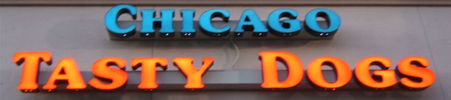

9711 S Eastern Ave. Las Vegas, Nevada, 89123
Owner Ashur Toma is a Chicago native who came to Las Vegas and opened up this midwest style restaurant and has plans to pass this restaurant down to his son who also currently resides in Las Vegas. Toma's brilliant plan to bring the midwest to him worked perfectly as people come from all over Vegas to eat these Chicago style dogs. Chicago Tasty Dogs does not sell only hot dogs; they sell sausages, gyros, burgers, and Chicago style scalas as well. Not only is the food outstanding, but the decor inside the restaurant appears as though you are in an authentic Chicago restaurant. Inside you can also find copies of the Chicago Tribune and the Chicago Sun-Times, shipped to the restaurant daily to further authenticate the experience.
Copyright 2007. Blake Gailen. Locals Las Vegas